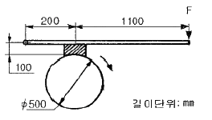
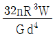
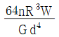
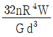
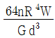

농업기계산업기사 (2008-05-11 기출문제)
1과목: 농업기계공작법
1. 드릴의 지름이 10mm이고 드릴의 회전수가 1000rpm 이면 드릴의 절삭속도는 약 몇 m/min 인가?
- 1000
- 100
- 31.4
- 3.14
(정답률: 80%)

2. 다음 중 탭(tap)작업시 탭 파손의 원인이 아닌 것은?
- 관통된 구멍을 모두 탭 가공하는 경우
- 구멍이 너무 작거나 구부러진 경우
- 탭이 경사지게 구부러진 경우
- 너무 무리하게 힘을 가하거나 빨리 절삭할 경우
(정답률: 89%)
3. 연삭 숫돌의 성능을 결정하는 5가지 요소인 것은?
- 칩, 기공, 결합도, 가공물, 입도
- 입자, 조직, 결합도, 기공, 칩
- 기공, 조직, 결합도, 가공물, 입도
- 입자, 조직, 결합도, 결합체, 입도
(정답률: 84%)
4. 구성인선(built-up edge)에 대한 설명 중 잘못된 것은?
- 발생→성장→최대성장→분열→탈락 과정을 반복한다.
- 경사각을 작게 하면 줄일 수 있다.
- 절삭 깊이를 작게 하면 줄일 수 있다.
- 절삭 속도를 크게 하면 줄일 수 있다.
(정답률: 63%)
5. 일반적으로 밀링에서 사용되는 3가지 분할 방법이 아닌 것은?
- 직접 분할법
- 단식 분할법
- 차동 분할법
- 고정 분할법
(정답률: 56%)
6. 통과측과 정지측이 있는 축용 한계게이지는?
- 봉 게이지
- 링 게이지
- 플러그 게이지
- 피치 게이지
(정답률: 71%)
7. 밀링 머신에 사용되는 일반적인 부속장치가 아닌 것은?
- 분할대
- 슬로팅 장치
- 면판
- 회전 테이블
(정답률: 76%)
8. 절삭 저항에서 3분력에 속하지 않는 것은?
- 주분력
- 이송 분력
- 배분력
- 상대 분력
(정답률: 73%)
9. 슈퍼피니싱(superfinishing)의 특징이 아닌 것은?
- 방향성이 없다.
- 가공면이 매끈하다.
- 가공에 따른 표면의 변질부가 아주 적다.
- 공작물의 전면에 균일한 단방향 운동을 준다.
(정답률: 84%)
10. 동력경운기의 주풀리 커버를 접합하는 저항용접인 것은?
- 납땜법
- 가스 용접
- 점(스폿) 용접
- 리벳 접합
(정답률: 90%)
11. 금속으로 제조된 금형 속에 용융점이 낮은 비철금속을 용융상태에서 가압하여 정밀도가 높고 치밀한 제품을 만들 수 있는 특수 주조법은?
- 원심 주조법
- 다이캐스팅 주조법
- 인베스트먼트 주조법
- 칠드 주조법
(정답률: 76%)
12. 정반 위에 올려 놓고 정반 면을 기준으로 하여 높이를 측정하거나 스크라이버 끝으로 금긋기 작업을 하는 데 사용하는 측정기는?
- 마이크로미터
- 버니어 캘리퍼스
- 하이트 게이지
- 컴비네이션 세트
(정답률: 83%)
13. 연삭 숫돌 표면에 무디어진 입자나 기공을 메우고 있는 칩을 제거하여 본래의 형태로 숫돌을 수정하는 방법 것은?
- 드레싱
- 채터링
- 글레이징
- 로딩
(정답률: 82%)
14. 공작물을 줄(File)로 가공할 때, 일반적인 줄의 사용 순서로 다음 중 가장 적합한 것은?
- 황목 → 유목 → 중목 → 세목
- 세목 → 유목 → 중목 → 황목
- 황목 → 중목 → 세목 → 유목
- 세목 → 유목 → 황목 → 중목
(정답률: 84%)
15. 수나사를 가공하는데 사용되는 수공구는?
- 다이스(dies)
- 리머(reamer)
- 치즐(chisel)
- 탭(tap)
(정답률: 88%)
16. 디젤 기관의 실린더 헤드 볼트를 조일 때, 마지막에 사용하는 공구로 가장 적합한 것은?
- 플러그 렌치
- 스피드 렌치
- 토크 렌치
- 롱 소켓 렌치
(정답률: 95%)
17. 사용하는 절삭 공구를 바이트라 하며 지름이 가늘고 긴 공작물을 절삭할 때는 방진구를 사용하는 공작기계는?
- 선반
- 다이스
- 리머
- 보링 머신
(정답률: 79%)
18. 프레스 가공방법에서의 전단가공 종류가 아닌 것은?
- 블랭킹(blanking)
- 트리밍(trimming)
- 시밍(seaming)
- 셰이빙(shaving)
(정답률: 72%)
19. 연속된 변위량 측정이 가능한 비교 측정기인 것은?
- 게이지 블록
- 다이얼 게이지
- 한계 게이지
- 버니어캘리퍼스
(정답률: 77%)
20. 표준 마이크로미터의 나사피치가 0.5mm이고, 딤블의 원주눈금을 50등분 했을 때 몇 mm까지 측정할 수 있는가?
- 0.01
- 0.02
- 0.⑤
- 0.1
(정답률: 77%)
2과목: 농업기계요소
21. 핸들과 같이 토크가 작은 곳의 고정에 가장 적합한 키로 핀 키라고도 하는 것은?
- 반달 키
- 평 키
- 새들 키
- 둥근 키
(정답률: 65%)
22. 주름관 모양이나 나선형 홈이 있는 금속 실린더로 되어 있고 두 축의 중심이 일치하지 않을 경우 두 축 사이의 편심을 흡수하면서 연결하는 커플링으로 비교적 낮은 토크에 사용하며 두 축의 만나는 각이 일치하지 않을 경우에도 높은 비틀림 강성을 가지며 백래시가 없는 것이 특징인 것은?
- 올덤 커플링
- 플랙시블 커플링
- 유니버설 커플링
- 밸로스형 커플링
(정답률: 48%)
23. 안전계수가 5인 롤러 체인에서 파단력이 3000N 일 때, 최대허용 전달 동력은 약 몇 kW 인가? (단, 속도는 2.5 m/s 이다.)
- 1.5
- 2.5
- 3.0
- 5.0
(정답률: 42%)
24. 기계 재료에 작용하는 하중의 종류를 하중 속도에 의하여 분류할 때, 힘의 크기와 방향이 동시에 주기적으로 변하는 하중을 의미하는 용어는?
- 정하중
- 반복 하중
- 교번 하중
- 충격 하중
(정답률: 66%)
25. 직경 42mm인 강제 볼트의 머리가 50kN의 하중을 지지하고 있다. 이 볼트 머리의 최소 허용높이는 약 몇 mm인가? (단, 볼트의 허용 전단응력은 10 N/mm2 이다.)
- 19
- 38
- 42
- 54
(정답률: 44%)
26. 마찰차의 원동차 지름이 200mm, 회전수는 300rpm 이고, 종동차의 지름이 300mm 일 때 종동차의 회전수(rpm)는? (단, 마찰면은 미끄럼이 없는 것으로 가정한다.)
- 200
- 300
- 400
- 500
(정답률: 50%)
27. 이끝원지름이 192mm, 모듈은 3인 표준 스퍼기어의 잇수는?
- 58
- 60
- 62
- 64
(정답률: 45%)
28. 0~90° 사이의 임의 각도로 회전하므로 유량을 조절할 수 있고, 1/4(즉 90°) 회전시켜 유체통로가 완전히 「열렸다, 닫혔다」하는 것은?
- 콕
- 스톱 밸브
- 앵글 밸브
- 슬루스 밸브
(정답률: 67%)
29. 그림과 같은 블록브레이크에서 100N·m의 회전력을 제동할 경우 레버 끝에 가하는 힘 F는 약 몇 N 이상이어야 하는가? (단, 마찰계수는 μ=0.3 이다.)

- 191
- 236
- 382
- 472
(정답률: 47%)
30. 250rpm 으로 220 N·m의 회전력을 내는 축은 약 몇 kW의 동력을 전달하는가?
- 3.22
- 5.23
- 5.76
- 8.71
(정답률: 45%)
31. 폭(b) 12cm, 높이(h) 36cm 인 직사각형 단면의 도심을 지나는 축에 대한 단면계수(Z)는 몇 cm3 인가?
- 1296
- 2592
- 3888
- 5184
(정답률: 50%)
32. 탈곡기 전동에서 원동기 풀리의 회전수는 1800rpm, 풀리의 직경은 150mm, 벨트의 두께는 5mm 이고 종동축의 풀리의 직경이 600mm 일 때 미끄럼이 없다고 하면 회전수는 약 몇 rpm 인가? (단, 벨트의 두께를 고려한 회전수 임)
- 461.2
- 451.2
- 441.2
- 431.2
(정답률: 40%)
33. 접촉면의 내경이 80mm, 외경이 140mm 인 단판 클러치에서 마찰 계수가 μ=0.2, 접촉면 압력이 p = 0.2 N/mm2일 때, 200wpm으로 약 몇 kW를 전달 할 수 있는가?
- 0.48
- 0.63
- 0.95
- 1.27
(정답률: 25%)
34. 볼베어링의 기본 부하용량을 C, 베어링하중을 P라 할 때, 베어링 하중이 P/2로 되면 정격수명은 몇 배로 되는가?
- 1/2배
- 2배
- 4배
- 8배
(정답률: 62%)
35. 동력 경운기의 연료 주입구와 냉각수 주입구 사이에 설치되어 있으면서 엔진과 같이 무거운 물체를 들어 올리는 곳에 가장 적합한 것은?
- T홈 볼트
- 턴 버클
- 나비 볼트
- 아이 볼트
(정답률: 80%)
36. 원통형 코일스프링에서 유효권수가 n, 코일의 평균 반지름 R, 작용하중 W, 전단탄성계수 G, 소선의 지름을 d라 할 때 스프링 처짐 δ를 구하는 식은?




(정답률: 60%)
37. 나사 호칭이 3/4 – 10 UNC 인 경우 설명으로 틀린 것은?
- 나사 축선 1인치 안에 10개의 나사 산이 있다.
- 바깥 지름이 3/4인치이다.
- 유니 파이 가는 나사이다.
- 피치는 2.54mm 이다.
(정답률: 65%)
38. 고압탱크나 보일러와 같은 기밀용기의 코킹 작업시 기밀을 더욱 완전하게 하기 위하여 끝이 넓은 끌로 때려 리벳과 판재의 안쪽 면을 완전히 밀칙시키는 것을 의미하는 용어는?
- 오프셋
- 맞물림
- 오일링
- 플러링
(정답률: 55%)
39. 축과 구멍의 틈새와 죔새를 기준으로 한 끼워맞춤에서 항상 틈새만 있는 것은?
- 상용 끼워맞춤
- 중간 끼워맞춤
- 헐거운 끼워맞춤
- 억지 끼워맞춤
(정답률: 74%)
40. 100kN의 인장하중이 작용하는 두께 12mm의 강판을 맞대기 용접하려고 한다. 목 두께를 약 몇 mm 이상으로 하여야 하는가? (단, 용접부 길이는 200mm, 용접효율은 85%, 용접부 허용응력은 60 MPa 이다.)
- 6
- 8
- 9
- 10
(정답률: 24%)
3과목: 농업기계학
41. 중경 제초기의 주요 부품이 아닌 것은?
- 중경날
- 솎음날
- 제초날
- 배토판
(정답률: 61%)
42. 수확된 건초를 손쉽게 처리, 운반 및 저장하기 위해서 건초를 압축하는 작업을 하는 기계는?
- 헤이 테더
- 레이얼 레이크
- 테더 레이크
- 헤어 베일러
(정답률: 71%)
43. 일반적인 원심펌프 작동시의 선행작업인 프라이밍의 설명으로 옳은 것은?
- 흡수된 물에 압력을 가하는 것
- 불순물을 걸러내는 작업
- 펌프를 설치하는 작업
- 운전에 앞서 케이싱과 흡입관에 물을 채우는 것
(정답률: 71%)
44. 연삭식 정미기에 관한 설명 중 틀린 것은?
- 높은 압력을 이용하므로 정백실 내의 압력은 마찰식보다 높다.
- 도정된 백미의 표면이 매끄럽지 못하고 윤택이 없는 결점이 있다.
- 정백 정도는 곡물이 정백실 내에 머무르는 시간에 비례한다.
- 연삭식 정미기는 쌀알이 부서지는 경우가 적은 것이 특징이다.
(정답률: 67%)
45. 강력한 압력이 필요한 높은 수목의 방제작업에 사용되는 분무기 노즐로 조절형 와류 노즐을 장착하고 있는 것은?
- 볼트형
- 원판형
- 캡형
- 철포형
(정답률: 70%)
46. 수로에서부터 면적이 30a인 밭에 물을 양수하는데 전양정이 15m이고 양수량이 0.5m3/min 이라면 펌프의 축 동력은 약 몇 kW 정도인가? (단, 펌프의 효율은 85% 이다.)
- 1.04
- 1.23
- 1.44
- 1.70
(정답률: 33%)
47. 로타리 경운날 종류 중 날 끝부분이 편평부와 80~90도의 각을 이루고 있으며, 잡초가 많은 흙은 경운하는데 효과적이며, 대형트랙터와 경운날로 쓰이는 형태의 날은?
- 보통형날
- 작두형날
- 삽형날
- L자형날
(정답률: 84%)
48. 시설용 농업의 기계 설비 하우스 내의 환경을 제어하기 위한 일반적인 인자로 농산물은 수분을 제외하면 80~90%가 이것으로부터 만들어지는 화합물이다. 이것은 무엇인가?
- 온도
- 광
- 습도
- 탄산가스
(정답률: 67%)
49. 사일리지(silage)를 조제 목적으로 목초를 벤 다음 세절한 후 풍력 또는 드래그 체인 컨베이어로 운반차에 불어 올리는 수확기는?
- 왕복 모어(reciprocating mower)
- 로터리 모어(rotary mower)
- 플레일 모어(flail mower)
- 포오리지 하베스터(forage harvester)
(정답률: 69%)
50. 곡물수확기에서 기계의 최전방에 예취할 작물과 나머지를 분리시키는 것은?
- 결속부(結束部)
- 디바이더(divider)
- 예취부(刈取部)
- 방출암(discharge arm)
(정답률: 59%)
51. 보텀 플라우(bottom plow)의 플라우 석션(lpow suction) 중에서 플라우의 진행 방향을 일정하게 유지시켜 주는 역할을 하는 석션은?
- 수직 석션
- 수평 석션
- 쉐어 석션
- 하방 석션
(정답률: 78%)
52. 곡물의 수확 및 가공과정에서 기계부품의 파손으로 인한 강제 볼트, 너트, 철편 조각 등을 선별하고자 한다. 다음 중 가장 적합한 선별기는?
- 원판형 선별기
- 자력 선별기
- 석발기
- 싸이클론 분리기
(정답률: 71%)
53. 콤바인의 구조 중 반송장치에 의하여 이송된 작물은 무엇에 의하여 공급체인과 공급레일 사이에 끼워 물려지는가?
- 공급깊이 장치
- 픽업 장치
- 크랭크 핑거
- 피드 체인
(정답률: 54%)
54. 미곡 종합처리장에 설치되어 있는 순환식 건조기 상부의 곡물 탱크부로 건조기 용량의 대부분이 이것의 용량인 것은?
- 템퍼링실
- 건조실
- 빈 스크린
- 주상 스크린
(정답률: 69%)
55. 목초수확 후 건조 과정에서 목초를 반전 또는 확산 시키기 위해 사용하는 기계는?
- 테더(tedder)
- 레이크(rake)
- 래퍼(reaper)
- 바인더(binder)
(정답률: 66%)
56. 병해충 방제용 스피드 스프레이어(speed sprayer)에 관한 설명으로 올바른 것은?
- 기계가 소형, 경량이며 구조가 간단하다.
- 노즐, 호스가 불필요하므로 취급이 간단하다.
- 침전방지장치가 필요 없고, 약제의 소요량이 적다.
- 과수원 등 넓은 면적의 병해충 방제에 이용 가능하다.
(정답률: 80%)
57. 곡립의 길이 차이를 이용하는 선별기로 원통형과 원판형으로 구분 되며, V자형 집적통, 곡물 이송장치, 구동장치 등으로 구성되어 있는 것은?
- 홈 선별기
- 스크린 선별기
- 마찰 선별기
- 공기 선별기
(정답률: 54%)
58. 이앙기의 본체를 지지하며, 경반의 깊이에 따라 상하로 이동하도록 되어 있어 차륜의 깊이가 조절되어 모를 일정한 깊이로 심을 수 있도록 하는 것은?
- 플로트
- 미끄럼 판
- 마스코트
- 예비 묘탑재대
(정답률: 84%)
59. 습량기준 함수율 15%를 건량기준 함수율로 환산한 값은?
- 15%
- 17.6%
- 20.3%
- 27.7%
(정답률: 63%)
60. 뿌리 수확기의 프레임(frame)에 고정되어 수확기를 따라 견인작용에 의하여 토양을 절단하는 것은?
- 스파이크
- 보습
- 스파이크 드럼
- 모어
(정답률: 77%)
4과목: 농업동력학
61. 승용 트랙터의 작업기 연결장치에서 이용되는 3점 히치식은 어느 방식인가?
- 견인식
- 직접 장착식
- 반장착식
- 독립 취출식
(정답률: 73%)
62. 유압시스템에서 압력이 일정 한도 이상이 되면 스프링을 밀어 통로가 열려 오일이 배유간을 통해 배출되어 과도한 압력 상승을 방지해 주는 유압 밸브는?
- 릴리프 밸브
- 방향제어 밸브
- 유량제어 밸브
- 솔레노이드 밸브
(정답률: 67%)
63. 4극 3상 유도전동기의 실제 회전수가 1710rpm일 때 슬립율은 몇 % 인가? (단, 전원은 60Hz 이다.)
- 3
- 5
- 8
- 10
(정답률: 42%)
64. 일반적인 차륜형 트랙터의 동력전달장치가 아닌 것은?
- 조향 장치
- 변속 장치
- 차동 장치
- 주 클러치
(정답률: 74%)
65. 내연기관에 사용되는 윤활유의 주요 기능이 아닌 것은?
- 기밀작용
- 냉각작용
- 압축작용
- 부식방지작용
(정답률: 77%)
66. 디젤기관의 연료 분사장치의 성능에서 분무 형성의 3대 요건이 아닌 것은?
- 무화상태가 좋아야 한다.
- 관통력이 커야 한다.
- 과급되어 있어야 한다.
- 균일하게 분산되어 있어야 한다.
(정답률: 77%)
67. 트랙터 앞바퀴 좌우의 간격이 앞쪽이 뒤쪽 보다 좁게 되어 있어 바깥 쪽으로 벌어져 구르려는 경향을 수정하여 직진성을 좋게 하는 차륜 정렬방식인 것은?
- 캠버각
- 캐스터각
- 토인
- 킹핀 경사각
(정답률: 66%)
68. 트랙터의 견인력을 증대시키기 위한 일반적인 방법이 아닌 것은?
- 마른 점토에서는 트랙터의 무게를 크게 한다.
- 타이어 직경이 큰 바퀴를 사용한다.
- 바퀴의 공기 압력을 낮게 한다.
- 폭이 좁은 타이어를 사용한다.
(정답률: 76%)
69. 어느 기관에서 50g의 연료를 소비하는데 10초가 걸린다. 이 기관의 축 출력이 60 kW 일 경우 연료 소비율은 약 몇 kg/kW·h 인가?
- 0.2
- 0.3
- 0.4
- 0.5
(정답률: 33%)
70. 표준온도에서의 축전지 전해액 비중이 완전히 방전된 상태일 때 값은?
- 1.12
- 1.28
- 2.25
- 2.28
(정답률: 69%)
71. 승용트랙터의 일반적인 시동회로로 올바른 것은?
- 솔레노이드→시동스위치→축전지→시동전동기
- 시동스위치→솔레노이드→축전지→시동전동기
- 축전지→시동스위치→솔레노이드→시동전동기
- 시동스위치→축전지→시동전동기→솔레노이드
(정답률: 79%)
72. 트랙터 공기타이어의 견인 능력을 증대시키기 위하여 타이어 바깥 둘레에 방사상으로 돌출된 보조장치로 사용되는 것은?
- 스트레이크
- 타이어 거들
- 피트만 암
- 드래그 링크
(정답률: 50%)
73. 디젤기관에서 디젤 노크가 일어나기 쉬운 때의 설명으로 틀린 것은?
- 시동시나 아이들(무부하) 운전시
- 흡기계(吸氣系)나 실린더 벽 등의 온도가 낮을 때
- 자연발화 온도가 낮은 경유를 사용하고 압축비가 높을 때
- 압축 중 가스누설이 큰 이유 등으로 압축공기의 온도가 낮을 때
(정답률: 63%)
74. 카르노 기관에서 0℃와 100℃ 사이에서 작동하는 (A)와 300℃와 400℃ 사이에서 작동하는 (B)가 있을 때, (A)와 (B) 중 어느 편이 효율이 좋은가?
- A
- B
- 같다.(A=B)
- 주어진 조건으로만 비교할 수 없다.
(정답률: 57%)
75. 일반적인 디젤 엔진을 가솔린 엔진에 비교하여 설명한 것으로 올바른 것은?
- 연료 소비율이 높다.
- 열효율이 높다.
- 진동 및 소음이 작다.
- 디젤기관이 빠르게 회전하여 출력이 높다.
(정답률: 62%)
76. 농업용 내연기관의 두상 밸브형(over head value type) 밸브 작동 기구가 아닌 것은?
- 태핏(tappet)
- 푸시로드(push rod)
- 로커암(rocker arm)
- 콘 로드(con rod)
(정답률: 71%)
77. 트랙터의 차륜이 일정한 회전을 하는 사이에 무부하시의 진행거리가 100m이고, 부하시에 진행거리는 95m 였다면 슬립율은 몇 % 인가?
- 5
- 5.26
- 9.5
- 10
(정답률: 69%)
78. 직류 전동기에서 고정자 권선과 전기자 권선이 병렬로 연결되어 있는 것은?
- 분권 전동기
- 직권 전동기
- 복권 전동기
- 단권 전동기
(정답률: 58%)
79. 승용트랙터 제동장치에서 좌우 독립 브레이크 페달을 사용하는 주된 목적은?
- 급정지를 위하여
- 회전반경을 작게 하기 위하여
- 경사지에서 제동이 잘되게 하기 위하여
- 부속 작업기를 신속하게 정지시키기 위하여
(정답률: 84%)
80. 견인을 목적으로 하는 경운, 정지 외에 파종, 중경, 제초, 병충해방제나 수확작업 등 여러 가지 작업에 폭 넓게 이용되며 바퀴 폭을 조절할 수 있는 현재 이용되는 대부분의 승용 트랙터인 것은?
- 표준형 트랙터
- 범용 트랙터
- 과수원용 트랙터
- 정원용 트랙터
(정답률: 77%)
절삭속도(m/min) = 드릴의 지름(mm) × π × 드릴의 회전수(rpm) ÷ 1000
여기에 드릴의 지름을 10mm, 회전수를 1000rpm으로 대입하면 다음과 같습니다.
절삭속도(m/min) = 10 × 3.14 × 1000 ÷ 1000 = 31.4
따라서 정답은 "31.4"입니다.